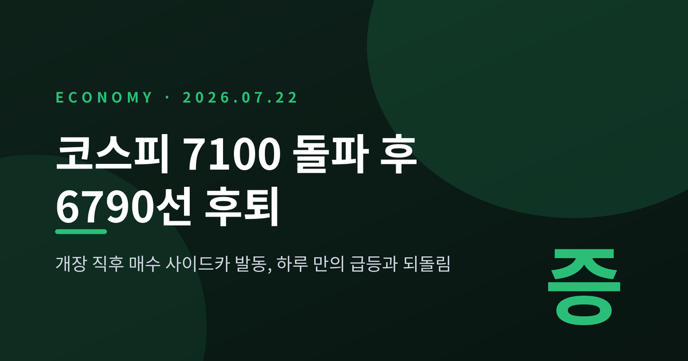
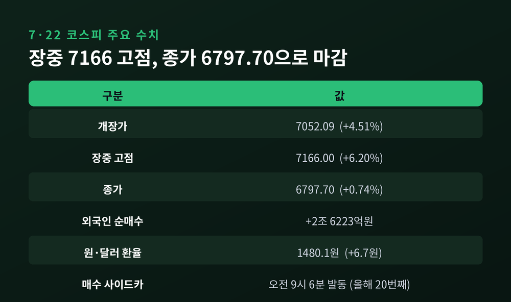
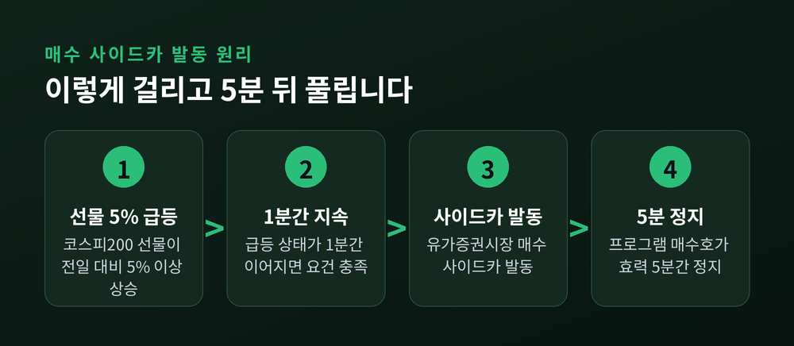
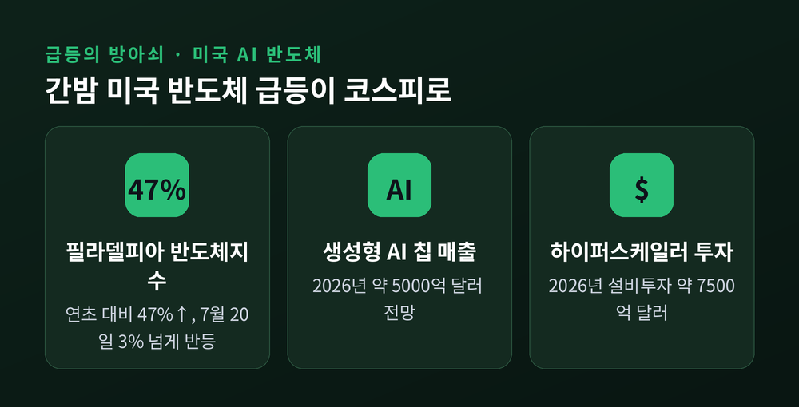
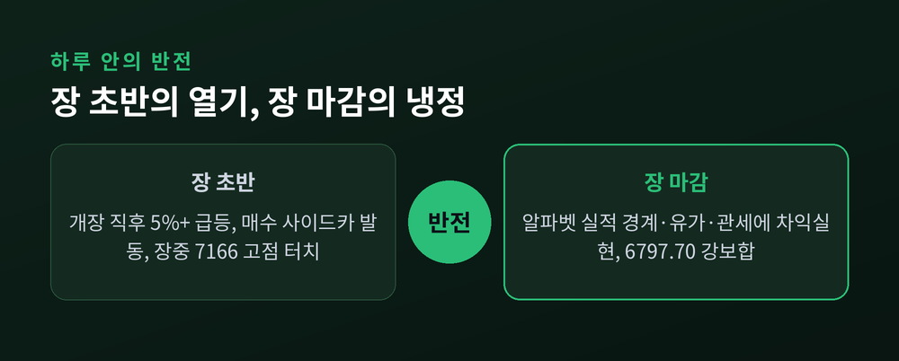
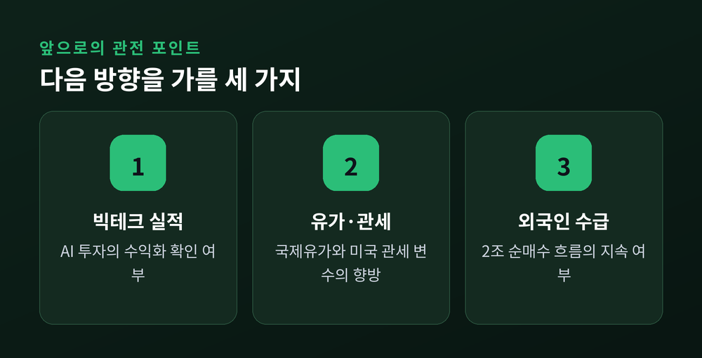

이번 글에서는 2026년 7월 22일 코스피에서 벌어진 일을 정리해 보겠습니다.
개장 직후 매수 사이드카가 발동했고, 지수는 장중 7100선을 넘었다가 6790선으로 물러났습니다.
하루 안에 벌어진 급등과 되돌림, 그 사이의 원인을 하나씩 짚어 보겠습니다.
세 줄 요약
이날 코스피는 7052.09로 문을 열었습니다. 전 거래일보다 304포인트, 4.51% 오른 갭 상승 출발이었습니다.
상승세는 개장 직후 더 가팔라졌습니다.
오전 9시 6분경, 코스피200 선물이 기준가 대비 5.40% 오른 상태가 이어지자 유가증권시장에 매수 사이드카가 발동됐습니다.
올해 들어 스무 번째 매수 사이드카였습니다.
지수는 여기서 멈추지 않았습니다.
장중 한때 7166.00까지 치솟았습니다. 전 거래일 대비 6.20% 오른 값입니다.
7100선을 단숨에 회복한 것입니다.
이 대목이 왜 중요한지 짚고 넘어가겠습니다.
사이드카는 자주 걸리는 장치가 아닙니다. 시장이 하루 안에 5% 넘게 급변할 때만 나타납니다.
그런데 이날 발동은 올해로 벌써 스무 번째였습니다.
발동 횟수가 많다는 것은 그만큼 2026년 증시의 하루 진폭이 크다는 뜻입니다.
지수의 방향보다, 하루 안에 오르내리는 폭 자체가 지금 시장의 특징인 셈입니다.

사이드카는 자동차 옆에 붙은 보조 좌석에서 따온 이름입니다.
본체(현물 시장)가 급하게 흔들릴 때 잠깐 속도를 늦추는 장치라고 보시면 됩니다.
발동 조건은 명확합니다.
코스피200 선물 가격이 전 거래일보다 5% 이상 오른 상태가 1분간 이어지면 매수 사이드카가 걸립니다.
반대로 5% 이상 내린 상태가 1분간 지속되면 매도 사이드카가 걸립니다. 이날은 급등장이었으니 매수 쪽입니다.
발동되면 프로그램 매수호가의 효력이 5분간 정지됩니다.
선물과 현물을 묶어 대량으로 자동 체결하는 프로그램매매만 잠시 멈추는 것입니다.
개별 종목을 사고파는 일반 주문은 그대로 이어집니다.
한 가지 구분해 둘 점이 있습니다.
사이드카는 거래를 아예 멈추는 '서킷브레이커'와 다릅니다.
서킷브레이커는 지수가 크게 폭락할 때 매매 자체를 일정 시간 중단시키는 강한 조치입니다.
반면 사이드카는 프로그램 주문에만 짧게 걸리고, 5분이 지나면 자동으로 풀립니다. 훨씬 가벼운 단계입니다.
정리하면 이렇습니다.
사이드카는 시장을 멈추는 '차단기'가 아니라, 과열된 프로그램 물량에만 잠깐 브레이크를 거는 '완충 장치'입니다.
이날처럼 발동됐다고 해서 곧바로 하락 신호로 읽을 필요는 없습니다. 급등의 속도를 잠시 늦춘 것뿐이니까요.

그렇다면 무엇이 이 급등을 만들었을까요.
출발점은 간밤 미국 증시였습니다.
미국 반도체주가 급반등했습니다.
7월 20일(현지) 필라델피아 반도체지수는 3% 넘게 올랐습니다.
7월 한 달 동안 AI 칩 관련주의 시가총액은 합산 약 2조 달러가 불었고, 이 지수는 연초 대비 47% 넘게 상승한 상태였습니다.
배경에는 'AI 투자 사이클이 다시 살아난다'는 기대가 있었습니다.
2026년 글로벌 반도체 매출 전망은 약 9750억 달러, 그중 생성형 AI 칩만 약 5000억 달러로 예상됩니다.
대형 클라우드 업체들의 올해 설비투자는 약 7500억 달러 규모로 거론됩니다.
이 기대가 국내로 넘어왔습니다.
개장 직후 삼성전자는 약 5%, SK하이닉스는 약 8% 뛰었습니다.
SK하이닉스는 장중 198만9000원까지 올라 '200만닉스'라는 말이 다시 등장했습니다.
시가총액 1·2위가 함께 뛰니 지수가 급등했고, 사이드카까지 걸린 것입니다.

문제는 오후였습니다.
지수는 상승분을 빠르게 반납했습니다.
되돌림에는 세 가지 부담이 겹쳤습니다.
첫째, 알파벳(구글 모회사)의 실적 발표를 앞둔 경계심리입니다. 빅테크 실적은 AI 투자가 실제 이익으로 이어지는지 확인하는 잣대라, 발표 직전에는 관망과 차익실현이 늘어납니다.
둘째, 국제유가 상승입니다. 유가가 오르면 물가와 기업 비용 부담이 커져 위험자산 선호가 약해집니다.
셋째, 미국 관세 정책의 불확실성입니다. 무역 리스크가 지수의 상단을 눌렀습니다.
결과는 숫자로 남았습니다.
삼성전자는 종가 26만500원으로 상승분을 대부분 반납해 0.58% 오르는 데 그쳤습니다.
SK하이닉스는 오히려 183만원으로 0.33% 내렸습니다.
장중 급등은 컸지만, 마감은 초라했습니다.
그래도 지수를 붙든 힘은 있었습니다.
외국인이 2조6223억원을 순매수하며 하단을 받쳤습니다.
덕분에 코스피는 6797.70으로, 전 거래일보다 0.74% 오른 강보합으로 마감했습니다.
같은 날 원·달러 환율은 6.7원 오른 1480.1원이었습니다.

하루 사이의 급등과 후퇴는 지금 시장의 성격을 잘 보여줍니다.
예전에는 반도체 호재가 그대로 지수에 눌러앉았습니다. 지금은 호재가 들어와도 하루를 못 버티고 되돌려집니다.
기대는 크지만 확신은 부족한, 변동성 장세입니다.
앞으로 볼 지점은 분명합니다.
빅테크 실적이 AI 투자의 수익화를 확인시켜 주는지, 국제유가와 관세 변수가 어느 방향으로 정리되는지, 외국인 순매수가 이어지는지입니다.
이 세 가지가 다음 방향을 가를 것입니다.
특히 외국인 수급은 눈여겨볼 만합니다.
이날 외국인은 2조원 넘게 순매수하며 지수의 하단을 지켰습니다.
반도체 대형주의 비중이 큰 코스피에서 외국인의 방향은 지수의 방향과 자주 겹칩니다.
그들이 매수를 이어 가는지, 아니면 하루짜리 반등에 그치는지가 관건입니다.
반대로 유가와 관세라는 대외 변수는 우리 손 밖에 있는 부분이라, 기대만으로 움직이기 어려운 국면이기도 합니다.
끝으로 한 가지만 덧붙이겠습니다.
이날의 교훈은 지수의 높이가 아니라 흐름의 결에 있습니다.
"장중 고점은 기록이지만, 종가는 시장의 대답이다."
7166이라는 숫자보다, 그 숫자를 지키지 못하고 6797로 내려앉은 과정이 지금의 시장을 더 정직하게 말해 줍니다.

※ 이 글은 정보 제공을 위한 시장 해설이며, 특정 종목의 매수나 매도를 권유하는 투자 권유가 아닙니다. 투자의 최종 판단과 책임은 투자자 본인에게 있습니다. 본문 수치는 2026년 7월 22일 마감 기준이며, 시장 상황에 따라 달라질 수 있습니다.